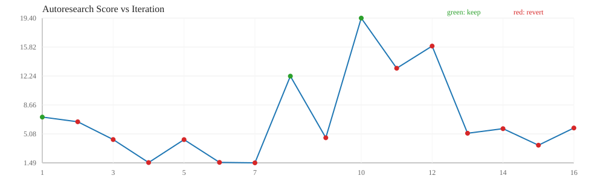

| ts | iter | bucket | decision | score | latency_us | gflops | reason | hypothesis | logs |
|---|---|---|---|---|---|---|---|---|---|
| 2026-03-19T17:56:05 | 1 | medium | keep | 7.1570 | 564.828 | 101.665933 | score_improved | bucket=medium try blocked_pack (bm=128,bn=64,bk=128,th=16,uk=1,simd=1) | |
| 2026-03-19T17:56:05 | 2 | medium | revert | 6.5761 | 621.244 | 95.019600 | improvement_below_threshold | bucket=medium try blocked (bm=96,bn=96,bk=128,th=16,uk=1,simd=1) | |
| 2026-03-19T17:56:05 | 3 | medium | revert | 4.3779 | 1044.401 | 73.988833 | improvement_below_threshold | bucket=medium try blocked_pack (bm=96,bn=96,bk=64,th=4,uk=4,simd=0) | |
| 2026-03-19T17:56:05 | 4 | medium | revert | 1.5285 | 3307.018 | 28.833400 | improvement_below_threshold | bucket=medium try blocked_pack (bm=96,bn=96,bk=64,th=1,uk=2,simd=1) | |
| 2026-03-19T17:56:05 | 5 | medium | revert | 4.3693 | 961.609 | 65.915733 | improvement_below_threshold | bucket=medium try blocked_pack (bm=128,bn=64,bk=64,th=4,uk=4,simd=1) | |
| 2026-03-19T17:56:05 | 6 | medium | revert | 1.5515 | 3226.828 | 28.989933 | improvement_below_threshold | bucket=medium try blocked_pack_simd (bm=128,bn=96,bk=64,th=1,uk=4,simd=1) | |
| 2026-03-19T17:56:05 | 7 | medium | revert | 1.4946 | 3404.049 | 28.372533 | improvement_below_threshold | bucket=medium try blocked_pack (bm=96,bn=64,bk=64,th=1,uk=4,simd=1) | |
| 2026-03-19T17:56:06 | 8 | large | keep | 12.2215 | 8443.850 | 254.325000 | score_improved | bucket=large try blocked_pack (bm=128,bn=96,bk=64,th=16,uk=2,simd=0) | |
| 2026-03-19T17:56:06 | 9 | large | revert | 4.5985 | 22441.200 | 95.693700 | improvement_below_threshold | bucket=large try blocked (bm=96,bn=96,bk=128,th=4,uk=4,simd=1) | |
| 2026-03-19T17:56:07 | 10 | large | keep | 19.4037 | 5318.410 | 403.783000 | score_improved | bucket=large try blocked_pack_simd (bm=128,bn=64,bk=128,th=16,uk=2,simd=1) | |
| 2026-03-19T17:56:07 | 11 | large | revert | 13.1982 | 7819.030 | 274.648000 | improvement_below_threshold | bucket=large try blocked (bm=64,bn=96,bk=96,th=16,uk=2,simd=0) | |
| 2026-03-19T17:56:07 | 12 | large | revert | 15.9447 | 6472.180 | 331.802000 | improvement_below_threshold | bucket=large try blocked (bm=64,bn=64,bk=96,th=16,uk=4,simd=1) | |
| 2026-03-19T17:56:08 | 13 | large | revert | 5.1555 | 20016.900 | 107.284000 | improvement_below_threshold | bucket=large try blocked_pack_simd (bm=96,bn=64,bk=128,th=4,uk=4,simd=1) | |
| 2026-03-19T17:56:08 | 14 | large | revert | 5.7241 | 18028.400 | 119.117000 | improvement_below_threshold | bucket=large try blocked_pack (bm=128,bn=96,bk=128,th=4,uk=2,simd=1) | |
| 2026-03-19T17:56:09 | 15 | large | revert | 3.6769 | 28066.200 | 76.514900 | improvement_below_threshold | bucket=large try blocked (bm=64,bn=128,bk=128,th=4,uk=4,simd=0) | |
| 2026-03-19T17:56:09 | 16 | large | revert | 5.8074 | 17769.900 | 120.850000 | improvement_below_threshold | bucket=large try blocked_pack_simd (bm=64,bn=128,bk=64,th=4,uk=1,simd=1) |